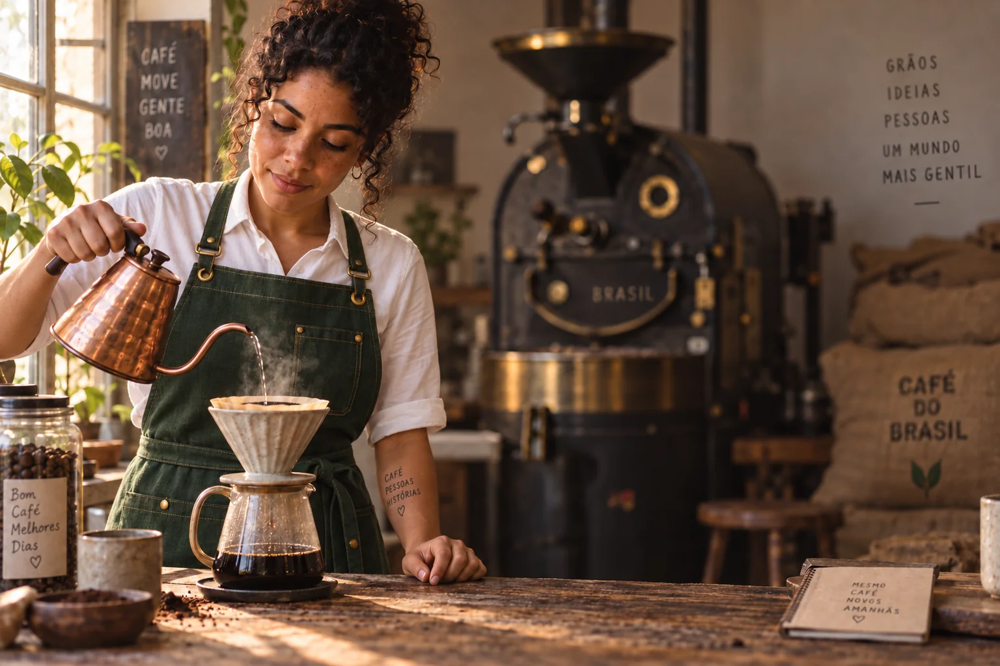
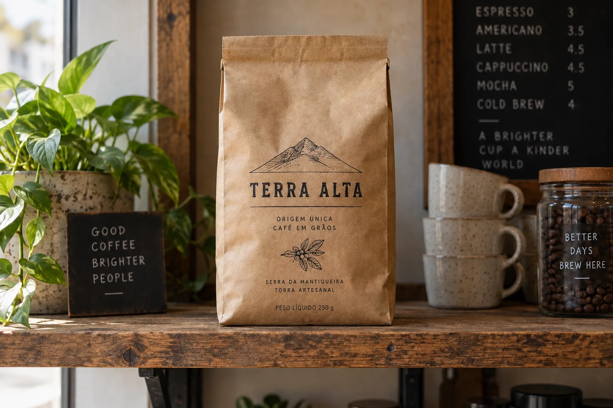
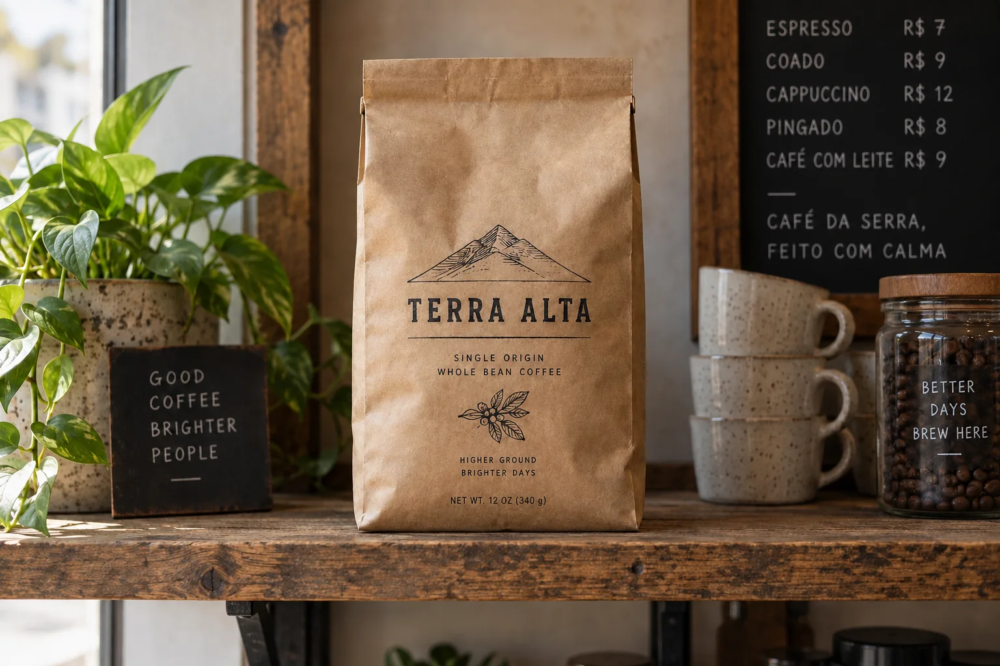
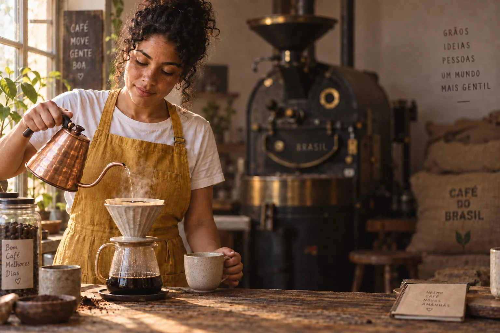
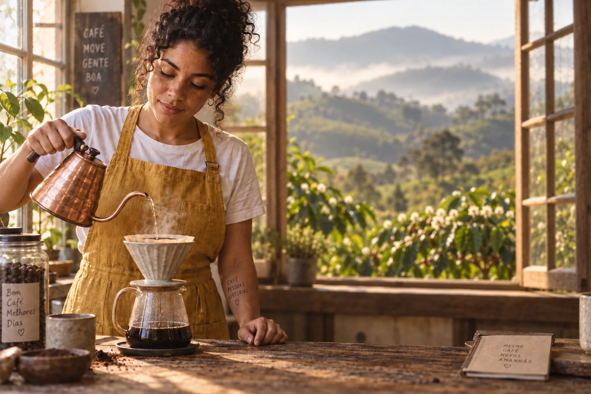
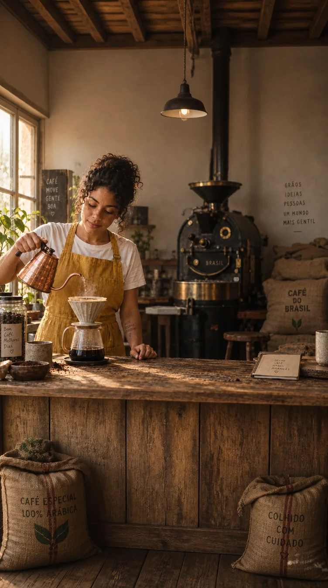
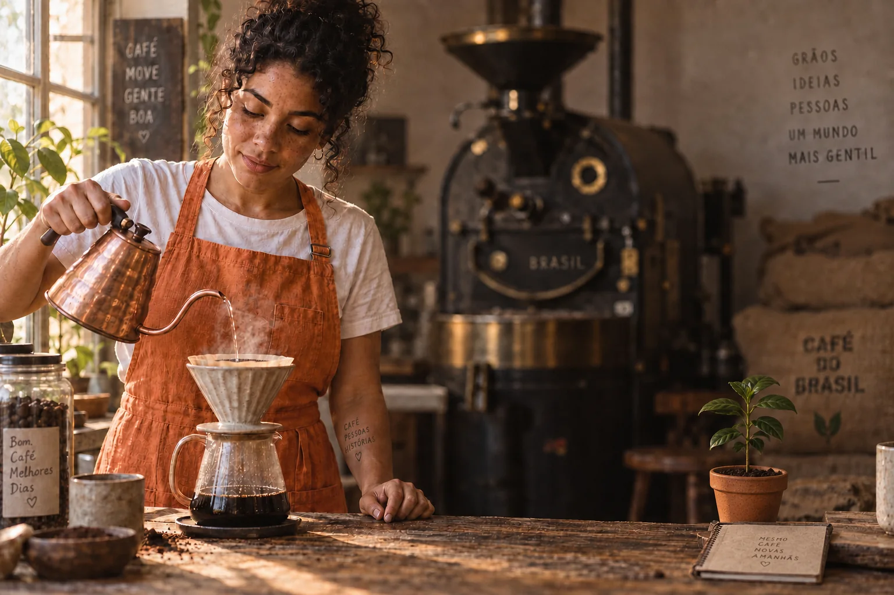
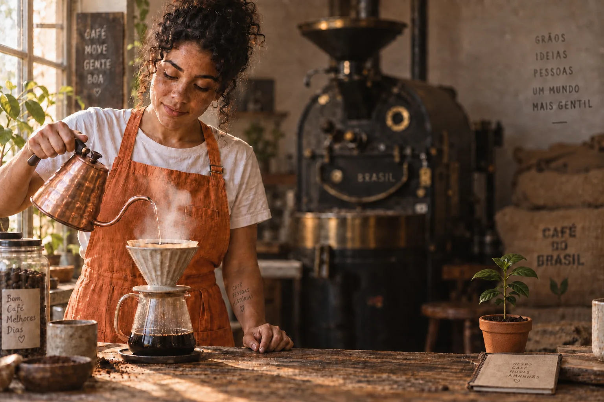
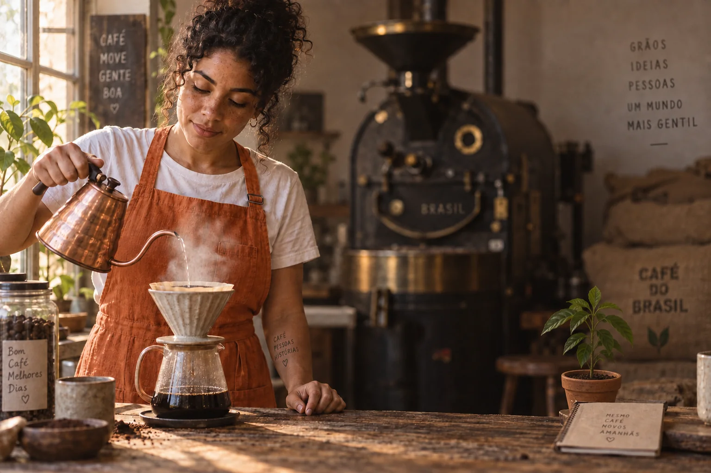

A imagem da Lia no módulo 1-2 ficou ótima — e tem problemas que nenhum cliente aceitaria: uma lousa com frase que ninguém escreveu, texto pintado na parede, um rótulo no pote, uma tatuagem com palavras no braço, “BRASIL” gravado no torrador. O reflexo do iniciante é gerar de novo e torcer. O profissional edita: tira só o que está errado e preserva a luz, o gesto e o rosto que já foram aprovados.

Prompt usado
Medium shot of Lia, a Brazilian barista in her early 30s with curly dark hair tied up, light-brown skin and freckles, wearing a mustard-yellow linen apron over a white t-shirt, slowly pouring hot water from a copper gooseneck kettle into a ceramic pour-over dripper, focused and calm. Shot on a 50mm lens at f/2, eye level. Soft morning window light from the left, warm 3500K, gentle shadow falloff on the right side of her face. Visible steam, matte glazed ceramic, worn wooden counter with coffee grounds, linen texture on the apron. Subject on the left third, negative space on the right with a softly blurred vintage coffee roaster and burlap sacks in the background. Natural documentary photography, subtle 35mm film grain, evoking quiet craftsmanship at dawn.

Instrução de edição usada (sobre a imagem-base)
Remove ALL written text from this image, and change nothing else: the chalkboard sign on the left becomes a plain dark board, the painted words on the right wall disappear leaving a plain plaster wall, the label on the glass jar becomes blank kraft paper, the notebook cover on the counter is blank, the word on the roaster's front badge is gone, the print on the burlap sack is gone, and the written tattoo on her forearm is removed (clean skin). Keep the woman, her face, pose, both hands, the kettle, the pour, the steam, every object, the lighting, the framing and the color grade identical.
Uma única edição com a instrução “remova todo texto escrito e não mude mais nada”. Compare lousa, parede, pote, caderno, antebraço e torrador: o texto sumiu; rosto, gesto, vapor e luz continuam os mesmos. Regenerar do zero daria outra Lia, outra luz e outros textos inventados.
1Editar, não regenerar
O que é
Gerar é o ponto de partida. A maior parte do trabalho com cliente é pedido de ajuste: “tira aquela placa”, “troca o fundo”, “precisa de uma versão vertical”, “o avental pode ser verde?”. Cada um desses pedidos mexe numa parte da imagem. Se você responde gerando de novo, o cliente recebe uma imagem diferente em tudo — e volta a aprovar do zero.
Por que aprender
A edição fixa a maior parte dos pixels e pede ao modelo que mexa só numa região ou numa característica. Isso preserva o que é mais difícil de conseguir de novo: o rosto certo, o gesto natural, a luz que caiu bem. Também é mais barato — uma edição resolve em uma rodada o que regenerar resolveria em dez tentativas.
Conceitos-chave em ação
✓ Edite quando…
- o rosto, a pose e a luz foram aprovados
- o problema é localizado (objeto, texto, roupa, mão)
- o pedido é de formato (vertical, quadrado, banner)
- o pedido é de clima (hora do dia, cor) mantendo a cena
✗ Regenere quando…
- a composição inteira está errada (plano, ângulo, lente)
- o personagem não é o personagem
- a imagem já passou por 3–4 edições e começou a degradar (tópico 8)
- o cliente mudou o conceito, não um detalhe
2O mapa: 4 tipos de edição × 3 métodos
O que é
Os quatro tipos de edição
| Tipo | O que muda | Pedidos típicos |
|---|---|---|
| Global | a imagem inteira: cor, contraste, luz, hora, clima, estilo | “mais quente”, “versão noturna”, “cara de filme” |
| Local (inpainting) | uma região: objeto, texto, roupa, mão, rosto | “tira a placa”, “troca a cor do avental”, “arruma a mão” |
| Estrutural (outpainting, recorte) | o quadro: formato, expansão, enquadramento | “preciso em 9:16”, “sobra espaço para título?” |
| Troca de elemento / fundo | um componente inteiro é substituído | “coloca ela no cafezal”, “cardápio em português” |
Por que aprender
Os métodos são as três formas de dizer ao modelo o que fazer. Instrução em texto: você anexa a imagem e descreve a mudança (modo “editar com prompt”, “imagem + prompt”). Máscara ou seleção: você pinta ou seleciona a área (pincel, laço, retângulo) e escreve o que vai ali — o modelo só mexe dentro. Referência: você anexa uma segunda imagem com o que deve entrar (o avental certo, o produto real, o rosto do personagem).
Conceitos-chave em ação
Pedido do cliente → tipo → método
| Pedido | Tipo | Método que resolve melhor |
|---|---|---|
| “Tira as frases da parede e da lousa” | local | texto (“remove all written text”) ou máscara em cada placa |
| “Queria essa foto à noite, com chuva” | global | texto, com invariantes |
| “Preciso de capa de Reels” | estrutural | expandir/outpaint para 9:16 + descrição do que entra nas bordas |
| “Coloca ela no cafezal” | troca de fundo | remover fundo + gerar novo, ou texto com “replace ONLY the background” |
| “O avental tem que ser o da loja” | troca de elemento | máscara no avental + imagem de referência do avental real |
3Instruções com invariantes: “mude só X, mantenha Y”
O que é
Uma boa instrução de edição tem três partes: o verbo com escopo (“Change ONLY…”, “Remove ONLY…”, “Replace ONLY…”), a mudança descrita com a mesma precisão de um prompt (material, cor, forma, luz) e a lista de invariantes — o que deve continuar exatamente igual (“Keep her face, pose, hands, background, lighting and framing identical”).
Prompt usado
Medium shot of Lia, a Brazilian barista in her early 30s with curly dark hair tied up, light-brown skin and freckles, wearing a mustard-yellow linen apron over a white t-shirt, slowly pouring hot water from a copper gooseneck kettle into a ceramic pour-over dripper, focused and calm. Shot on a 50mm lens at f/2, eye level. Soft morning window light from the left, warm 3500K, gentle shadow falloff on the right side of her face. Visible steam, matte glazed ceramic, worn wooden counter with coffee grounds, linen texture on the apron. Subject on the left third, negative space on the right with a softly blurred vintage coffee roaster and burlap sacks in the background. Natural documentary photography, subtle 35mm film grain, evoking quiet craftsmanship at dawn.

Instrução de edição usada (sobre a imagem-base)
Make her look more premium, with a green apron.

Instrução de edição usada (sobre a imagem-base)
Change ONLY the apron: make it a dark forest-green waxed-canvas apron with brown leather straps and small brass buckles. Keep her face, freckles, hair, white t-shirt, pose, both hands, the kettle, the pour and the steam, every background object, the lighting, the framing and the color grade exactly identical.
Duas edições da mesma base. Na do meio, a instrução vaga (“mais premium, com avental verde”) trocou o avental — e também a camiseta branca por uma camisa de colarinho com mangas dobradas, e pôs ilhoses e fivelas de latão. Ninguém pediu a camisa: “premium” deu licença ao modelo. A da direita descreve o avental (lona encerada verde-escura, alças de couro, fivelas de latão) e lista tudo o que deve ficar igual. Abra os dois “Prompt usado”.
Por que aprender
Adjetivos de valor (“premium”, “mais bonito”, “mais profissional”) não dizem o que mudar — então o modelo escolhe. Às vezes escolhe bem, mas escolhe por você: a luz, o fundo, o penteado entram na conta. Invariantes transformam um desejo em uma ordem com limites. Elas também servem de checklist na revisão: você confere item por item se ficou igual.
Conceitos-chave em ação
Molde de instrução de edição
Objetivo: Pedir uma mudança precisa e travar todo o resto.
Change ONLY <o elemento>: <descrição da mudança com material, cor, forma e luz>. Match the existing light direction (<de onde vem a luz>) and perspective. Keep <rosto/pessoa>, <pose e mãos>, <objetos principais>, the background, the lighting, the framing and the color grade exactly identical.
Como verificar: Depois de gerar, confira item por item da lista “Keep…”. Se algo que estava na lista mudou, refaça reforçando esse item — não troque o pedido.
✓ Instrução com escopo
- Change ONLY the apron to dark forest-green waxed canvas…
- Remove ONLY the chalkboard sign; fill with plain plaster wall
- Replace ONLY the background; keep the light from the left at 3500K
✗ Instrução aberta
- make it more premium
- clean up the image
- put her somewhere nicer
4Edição global: hora do dia, clima e cor
O que é
Na edição global não há máscara: a instrução vale para a imagem inteira. Funciona muito bem só com texto, porque o modelo mantém a estrutura (quem está onde) e reaplica luz, cor e atmosfera. O cuidado é dizer quais fontes de luz existem depois da mudança — de onde vem, que cor, o que ilumina — como no módulo 1-2.
Prompt usado
Medium shot of Lia, a Brazilian barista in her early 30s with curly dark hair tied up, light-brown skin and freckles, wearing a mustard-yellow linen apron over a white t-shirt, slowly pouring hot water from a copper gooseneck kettle into a ceramic pour-over dripper, focused and calm. Shot on a 50mm lens at f/2, eye level. Soft morning window light from the left, warm 3500K, gentle shadow falloff on the right side of her face. Visible steam, matte glazed ceramic, worn wooden counter with coffee grounds, linen texture on the apron. Subject on the left third, negative space on the right with a softly blurred vintage coffee roaster and burlap sacks in the background. Natural documentary photography, subtle 35mm film grain, evoking quiet craftsmanship at dawn.

Instrução de edição usada (sobre a imagem-base)
Change ONLY the time of day and weather: it is now a rainy evening at blue hour. The window on the left shows a deep blue dusk with raindrops and streaks on the glass; cool 7000K light comes through it, and a warm 2700K pendant lamp above the counter lights her hands, the kettle and the dripper. Reflections on the wet window, slightly darker room. Keep the woman, her face, pose, hands, the pour, every object, the framing and the lens identical.
Uma edição global da mesma base. A instrução descreveu a nova hora (anoitecer azul, chuva no vidro), a luz fria que entra pela janela e a luz quente de um pendente sobre o balcão — e travou pessoa, pose, objetos e enquadramento.
Por que aprender
Uma única foto aprovada rende uma série: versão manhã para o post de segunda, versão noite para a promoção do happy hour do café, versão fria para o inverno. Como a pessoa e a composição não mudam, a série parece planejada — e é.
Conceitos-chave em ação
Frases de edição global
| Quero… | Frase para a instrução |
|---|---|
| mudar a hora | Change ONLY the time of day to golden hour / blue hour / night; <novas fontes de luz com K> |
| mudar o tempo | overcast rainy day, raindrops on the window, soft diffused 6500K light |
| gradação de cor | apply a warm, muted film color grade: lifted blacks, soft highlights, desaturated greens |
| estilo inteiro | Fully re-render this ENTIRE image as <estilo>, keep the composition and the people |
5Edição local: remover, corrigir, trocar um detalhe
O que é
Com pincel/máscara você pinta a área que muda e escreve o que vai no lugar. Com seleção de região (retângulo ou laço) você anexa uma instrução só àquela área (“selecione o céu → céu de tempestade”). Com instrução de escopo você nomeia o elemento no texto. As três fazem a mesma coisa em graus diferentes de precisão; a máscara é a mais próxima do retoque de Photoshop.

Prompt usado
Product photograph of a kraft-paper coffee bag with a hand-stamped label reading 'TERRA ALTA' standing on a rustic wooden shelf in a café, perfectly centered and symmetrical in the frame, soft window light from the left, 4000K, 50mm lens, realistic paper texture.

Instrução de edição usada (sobre a imagem-base)
Change ONLY the English text lines printed on the coffee bag into Portuguese, in the same typeface, size, ink color and position: 'SINGLE ORIGIN / WHOLE BEAN COFFEE' becomes 'ORIGEM ÚNICA / CAFÉ EM GRÃOS'; 'HIGHER GROUND / BRIGHTER DAYS' becomes 'SERRA DA MANTIQUEIRA / TORRA ARTESANAL'; 'NET WT. 12 OZ (340 g)' becomes exactly 'PESO LÍQUIDO 250 g' (remove the parentheses completely, no leftover bracket). Keep 'TERRA ALTA', the mountain and coffee-branch drawings, the bag shape and wrinkles, and everything else in the photo exactly identical.

Instrução de edição usada (sobre a imagem-base)
Replace ONLY the chalkboard menu at the top right with a Brazilian menu in Portuguese, same white hand-lettered chalk style and layout: 'ESPRESSO R$ 7', 'COADO R$ 9', 'CAPPUCCINO R$ 12', 'PINGADO R$ 8', 'CAFÉ COM LEITE R$ 9', then a short line and 'CAFÉ DA SERRA, FEITO COM CALMA'. Keep the coffee bag, its label, the shelf, the plant, the cups, the jar and all lighting exactly identical.
Pedido real de cliente: a marca é brasileira, mas a geração inventou textos em inglês, peso em onças e preços sem moeda. Duas edições locais sobre a mesma base: uma só no rótulo do pacote, outra só na lousa do cardápio. O resto da prateleira deveria ficar intocado — confira.
Por que aprender
Detalhes pequenos derrubam a credibilidade da imagem inteira: texto errado, mão com dedo a mais, logotipo que não existe. São justamente os detalhes que o cliente aponta primeiro. A edição local resolve o problema sem arriscar o que está certo em volta.
Prompt usado
Medium shot of Lia, a Brazilian barista in her early 30s with curly dark hair tied up, light-brown skin and freckles, wearing a mustard-yellow linen apron over a white t-shirt, slowly pouring hot water from a copper gooseneck kettle into a ceramic pour-over dripper, focused and calm. Shot on a 50mm lens at f/2, eye level. Soft morning window light from the left, warm 3500K, gentle shadow falloff on the right side of her face. Visible steam, matte glazed ceramic, worn wooden counter with coffee grounds, linen texture on the apron. Subject on the left third, negative space on the right with a softly blurred vintage coffee roaster and burlap sacks in the background. Natural documentary photography, subtle 35mm film grain, evoking quiet craftsmanship at dawn.

Instrução de edição usada (sobre a imagem-base)
Change ONLY her left hand, the one resting on the counter at the right of the dripper: she now holds a small speckled cream ceramic cup by its handle, natural relaxed grip with five correctly shaped fingers, thumb on top of the handle, wrist relaxed. Match the warm window light from the left and the shadow direction. Keep her face, the right hand with the kettle, the pour, the apron, every other object, the background, the framing and the color grade identical.
Edição local de mão: a esquerda de Lia, antes apoiada no balcão, passa a segurar uma xícara salpicada, com dedos de formato natural e a luz vinda do mesmo lado. Repare que a instrução pedia a pegada pela alça, com o polegar por cima — o modelo preferiu envolver o corpo da xícara com a mão. Pegada crível, mas não a pedida: confira sempre o detalhe que você especificou. É a mesma técnica que se usa para corrigir uma mão deformada numa geração: isolar a mão e descrever a pegada.
Conceitos-chave em ação
Boas práticas de máscara
- Pinte a máscara um pouco maior que o objeto — a borda do objeto e a sombra dele também precisam ser refeitas.
- Use borda suave (feather) para a transição não virar uma costura visível.
- Inclua a sombra do objeto ao removê-lo; sombra órfã denuncia a edição.
- Descreva o que entra no lugar, não só o que sai (“fill with plain plaster wall”, “fill with soft bokeh”).
- Em mãos e rostos, peça anatomia explícita: “five correctly shaped fingers”, “same face”.
- Confira a direção da luz e a perspectiva do que foi inserido.
6Troca de fundo sem cara de recorte
O que é
Há dois caminhos. Nas ferramentas de interface: remover fundo com um clique (o sujeito fica recortado) e gerar um novo com uma frase curta. Na edição por texto: “Replace ONLY the background…” descrevendo o novo lugar. Nos dois casos, o novo fundo tem de concordar com a luz que já está no sujeito.
Prompt usado
Medium shot of Lia, a Brazilian barista in her early 30s with curly dark hair tied up, light-brown skin and freckles, wearing a mustard-yellow linen apron over a white t-shirt, slowly pouring hot water from a copper gooseneck kettle into a ceramic pour-over dripper, focused and calm. Shot on a 50mm lens at f/2, eye level. Soft morning window light from the left, warm 3500K, gentle shadow falloff on the right side of her face. Visible steam, matte glazed ceramic, worn wooden counter with coffee grounds, linen texture on the apron. Subject on the left third, negative space on the right with a softly blurred vintage coffee roaster and burlap sacks in the background. Natural documentary photography, subtle 35mm film grain, evoking quiet craftsmanship at dawn.

Instrução de edição usada (sobre a imagem-base)
Replace ONLY the background behind Lia: instead of the roaster, the wall and the burlap sacks, show a large open window looking out onto rows of coffee plants on green Mantiqueira hills in soft morning haze, slightly out of focus to match the original depth of field. Keep the light coming from the left at the same warm 3500K, the same perspective and horizon height, the wooden counter and every foreground object, and the woman, her pose, both hands and the pour exactly identical.
Só o fundo foi trocado: o torrador e a parede viraram uma janela aberta para o cafezal em flor e os morros com névoa. Pessoa, balcão, objetos (e até os textos da base, que não entraram no pedido) ficaram. A luz quente da esquerda se manteve. Confira com a tabela abaixo: o fundo novo saiu mais nítido do que o torrador desfocado do original — numa entrega, esse seria o ponto a refazer (“background out of focus, f/2 look”).
Por que aprender
O olho humano percebe incoerência de luz antes de saber explicar por quê: rosto iluminado pela esquerda com o sol do fundo vindo da direita; sujeito nítido contra um fundo mais nítido ainda; horizonte na altura do peito quando a câmera está na altura dos olhos. Esses três erros são o “cara de recorte”.
Conceitos-chave em ação
Conferência de troca de fundo
| Ponto | Pergunta | Se falhar, peça |
|---|---|---|
| Direção da luz | a luz do fundo vem do mesmo lado que ilumina o rosto? | keep the light coming from the left |
| Temperatura | a cor da luz do fundo combina com a pele? | match the warm 3500K light on her skin |
| Perspectiva | o horizonte está na altura da câmera? | same camera height and horizon line |
| Profundidade | o desfoque do fundo bate com a lente do original? | background slightly out of focus, f/2 look |
| Borda | cabelo e ombros têm halo ou serrilhado? | clean natural edges around the hair |
7Expansão (outpainting): a mesma foto em outro formato
O que é
A imagem-mestre é 3:2 horizontal; o cliente quer capa de Reels (9:16). Recortar um 9:16 do meio de um 3:2 corta a chaleira, o torrador e metade do gesto. Expandir mantém a imagem original intacta no centro e pede ao modelo que invente o que há acima e abaixo — teto, luminária, a frente do balcão, o chão — com a mesma luz e perspectiva.
Prompt usado
Medium shot of Lia, a Brazilian barista in her early 30s with curly dark hair tied up, light-brown skin and freckles, wearing a mustard-yellow linen apron over a white t-shirt, slowly pouring hot water from a copper gooseneck kettle into a ceramic pour-over dripper, focused and calm. Shot on a 50mm lens at f/2, eye level. Soft morning window light from the left, warm 3500K, gentle shadow falloff on the right side of her face. Visible steam, matte glazed ceramic, worn wooden counter with coffee grounds, linen texture on the apron. Subject on the left third, negative space on the right with a softly blurred vintage coffee roaster and burlap sacks in the background. Natural documentary photography, subtle 35mm film grain, evoking quiet craftsmanship at dawn.

Instrução de edição usada (sobre a imagem-base)
OUTPAINT to a VERTICAL 9:16 canvas (tall portrait orientation, for a Reels cover): keep the original picture unchanged in the middle band at the same scale, and invent new matching content above and below it. Above: wooden ceiling beams, the top of the roaster's chimney and a hanging pendant lamp, with calm empty wall space for a headline. Below: the front of the worn wooden counter, a couple of burlap coffee sacks on the floor and the rustic floor boards. Same warm window light from the left, same perspective, same color grade and film grain, seamless transitions.
A instrução pediu tela vertical 9:16, a foto original intacta na faixa do meio e conteúdo novo acima (vigas, chaminé do torrador, luminária e parede livre para título) e abaixo (frente do balcão, sacas, piso). O acima e o abaixo vieram; mas repare que a faixa do meio não é a foto original colada: o GPT Image redesenhou a cena inteira (o torrador mudou de lugar, a Lia ficou menor). Quando o miolo precisa ficar idêntico pixel a pixel, use a ferramenta de expandir/outpaint dedicada da sua plataforma, que preserva o original e só pinta as bordas.
Por que aprender
Expansão é edição estrutural: resolve o formato antes de tudo. E já é a hora de pensar no texto que vai por cima — na capa vertical, o espaço de parede acima de Lia é onde entra o título. Descreva no pedido o que precisa existir nas bordas (“calm empty wall space for a headline”); se você deixar em aberto, o modelo pode encher de objetos.
Conceitos-chave em ação
Formatos de entrega mais comuns
| Formato | Uso | O que expandir |
|---|---|---|
| 9:16 | Reels, Stories, Shorts, capa vertical | acima e abaixo; deixar área limpa no topo para título |
| 4:5 | feed do Instagram | um pouco acima e abaixo |
| 1:1 | feed, catálogo, marketplace | depende da origem; em 3:2, acima e abaixo |
| 16:9 | YouTube, banner de site, apresentação | nas laterais; espaço negativo de um lado para texto |
8Edições em cadeia, degradação e o checklist final
O que é
Cada edição é uma nova geração que tenta copiar os pixels que você mandou manter — e a cópia nunca é perfeita. Ao encadear, a cópia da cópia vai perdendo: a textura da pele muda, as sardas mudam de peso, o contraste e o brilho sobem, o fundo ganha grão que não existia. Veja o teste: três mudanças pequenas, uma por vez, cada uma sobre a anterior; e as mesmas três numa única edição sobre o original.

Instrução de edição usada (sobre a imagem-base)
Change ONLY the apron color to a warm terracotta orange, same linen fabric. Keep everything else identical.

Instrução de edição usada (sobre a imagem-base)
Add ONLY a small potted coffee seedling in a clay pot on the counter at the far right. Keep everything else identical.

Instrução de edição usada (sobre a imagem-base)
Make ONLY the steam rising from the dripper denser and more visible. Keep everything else identical.

Instrução de edição usada (sobre a imagem-base)
Make exactly three changes and nothing else: (1) the apron color becomes a warm terracotta orange, same linen fabric; (2) add a small potted coffee seedling in a clay pot on the counter at the far right; (3) the steam rising from the dripper becomes denser and more visible. Keep the woman, her face, freckles, hair, pose, hands, every other object, the lighting, the framing and the color grade identical.
Este é o único lugar do curso em que editamos além de dois níveis — de propósito. As três primeiras são uma cadeia (cada uma editada sobre a anterior); a última aplica as mesmas três mudanças numa só edição sobre a imagem-mestre. Em miniatura as quatro parecem iguais — e é essa a armadilha. Em zoom 100%, a “Cadeia 3” mostra o desgaste: pele mais dura e brilhante, sardas mais escuras e “crocantes”, nitidez exagerada nos cachos e a parede do fundo mais granulada. O “Direto”, com as mesmas três mudanças, fica muito mais perto da mestre do topo do módulo.
Por que aprender
A regra prática: volte sempre à mestre. Se o cliente pede três ajustes, faça-os numa edição só (ou em edições paralelas, cada uma sobre a mestre, e escolha). Se precisa encadear — por exemplo, primeiro limpar o texto, depois expandir —, pare em dois níveis e confira o rosto a cada passo.
Conceitos-chave em ação
Checklist de revisão antes de entregar
- Pedido: a mudança pedida aconteceu, e só ela? Compare com a mestre lado a lado, no mesmo tamanho.
- Invariantes: passe pela lista “Keep…” da instrução, item por item.
- Pessoa: rosto, marcas (sardas), idade aparente e mãos — zoom a 100%.
- Luz: direção, dureza e temperatura coerentes em tudo que foi editado; sombras dos objetos novos no lado certo.
- Bordas e costuras: halo em volta do cabelo, repetição de padrão, área borrada onde havia máscara.
- Texto: leia cada palavra e número; acentos e unidades (g, R$).
- Formato e resolução: proporção certa para o destino; se vai imprimir ou ampliar, passe para o módulo 3-2 (upscale).
- Registro: salve antes/depois, a instrução usada e o número da versão.
O cliente não vê a edição — vê o que ficou igual. Uma edição boa é aquela em que ninguém percebe onde você mexeu.
Prática guiada: um caso antes/depois pronto para portfólio
Você vai pegar uma imagem sua (uma geração dos módulos anteriores ou uma foto real sua) e levá-la até a versão de entrega para um uso definido, registrando o processo. No fim, você tem um “case” de edição.
Roteiro
- Defina o uso em 1–2 frases e o formato: ex. “capa de Reels da Terra Alta, 9:16, título em cima”.
- Salve a mestre como v0. Nunca edite por cima dela.
- Estrutura: expanda ou recorte para o formato e confirme o espaço para texto. Salve como v1 (“estrutura resolvida”).
- Conteúdo: faça 2–3 edições (fundo, objeto, roupa, detalhe) usando pelo menos dois métodos diferentes (texto, máscara, referência). Cada uma com invariantes.
- Rode o checklist de revisão. Refaça o que falhar voltando à versão anterior, não empilhando mais edições.
- Monte o antes/depois e escreva a nota de fluxo (modelo abaixo).
Instrução de limpeza (a primeira edição de quase toda geração)
Objetivo: Remover o texto que o modelo inventou em placas, rótulos e paredes sem mexer em mais nada.
Remove ALL written text from this image, and change nothing else: <liste cada lugar com texto: the chalkboard sign on the left, the words painted on the wall, the label on the jar…>. Fill each area with what would naturally be there (<plain dark board / plain plaster wall / blank kraft label>). Keep the person, her face, pose and hands, every object, the lighting, the framing and the color grade identical.
Como verificar: Todos os textos listados sumiram? Sobrou alguma letra fantasma? O rosto e a luz estão iguais à mestre quando você alterna entre as duas?
Nota de fluxo (cole no seu case)
Uso: capa de Reels da Terra Alta (9:16), título na parte de cima. Base: c1-m12-mestre (geração aprovada, 3:2). Estrutura: expandida para 9:16 — teto e parede livre acima, balcão abaixo. (v1) Conteúdo 1: remoção de todo texto inventado — instrução em texto. (v2) Conteúdo 2: avental trocado para verde — máscara no avental + invariantes. (v3) Revisão: sardas conferidas a 100%; sombra da xícara nova no lado certo. Melhoraria: a costura do teto expandido aparece na viga esquerda.
Lição de casa
Use o cliente que acompanha você desde o módulo 1-2 e escolha a imagem dele que mais tem “quase”: boa, mas com um ou dois problemas que impediriam a entrega. Defina para que ela vai servir antes de mexer.
Nível básico (obrigatório)
- Escreva o uso e o formato de destino em 1–2 frases.
- Faça 1 edição estrutural (expandir ou recortar para o formato) e salve como “estrutura resolvida”.
- Faça 2 edições de conteúdo com métodos diferentes, cada uma com a lista de invariantes.
- Rode o checklist de revisão e anote o que precisou refazer.
- Monte o antes/depois e a nota de fluxo (5–8 linhas).
Nível avançado (desafio)
- Três formatos: a partir da mesma versão final, entregue 9:16 (Reels), 1:1 (feed) e 16:9 (YouTube/site), cada um com espaço para texto no lugar certo.
- Teste de invariantes: faça a mesma mudança duas vezes sobre a mestre — com instrução vaga e com invariantes — e escreva 5 frases sobre o que mudou sem você pedir.
- Teste de degradação: encadeie 4 edições pequenas e compare a última com uma edição única que faça as mesmas mudanças. Recorte só os rostos, no mesmo tamanho, e descreva a perda.
- Foto real: repita o fluxo com uma foto sua (produto, ambiente, retrato autorizado) e compare como a IA lida com foto real e com imagem gerada.
Entregue/guarde: Case de edição: antes, depois, as versões intermediárias numeradas, as instruções usadas e a nota de fluxo. Vai direto para o portfólio do módulo 4-1.
Teste sua decisão
1. O cliente aprovou a imagem, mas quer tirar uma placa com texto do fundo. O que você faz?
Consultar a explicação
Regenerar sorteia tudo de novo, inclusive o que foi aprovado. A edição local mexe só na placa e preserva rosto, luz e gesto; as invariantes garantem que o resto fique igual.
2. Qual instrução tem mais chance de trocar só o avental?
Consultar a explicação
Escopo (“ONLY”), descrição precisa da mudança e lista de invariantes. Adjetivos de valor como “premium” dão licença ao modelo para decidir outras mudanças.
3. O cliente pediu três ajustes pequenos numa imagem. Qual fluxo degrada menos?
Consultar a explicação
Cada edição copia a imagem com pequenas perdas; encadeadas, as perdas se somam. Voltar à mestre mantém a qualidade — e regenerar perde o que já estava aprovado.
Responder não marca a leitura nem bloqueia o próximo módulo.
O que levar desta aula
- Gerar é o ponto de partida; entregar é editar. Mestre intocada, uma versão nova por edição.
- Nomeie o pedido: global, local, estrutural ou troca — e escolha o método: texto, máscara ou referência.
- Toda instrução de edição tem escopo, descrição precisa e invariantes (“Change ONLY X… Keep Y identical”).
- Troca de fundo e objeto novo só convencem com a mesma luz e a mesma perspectiva.
- Estrutura primeiro (formato, espaço para texto), conteúdo depois; texto final e logo vão para o editor clássico.
- Evite cadeias longas: volte à mestre e revise com checklist, em zoom 100%, antes de entregar.